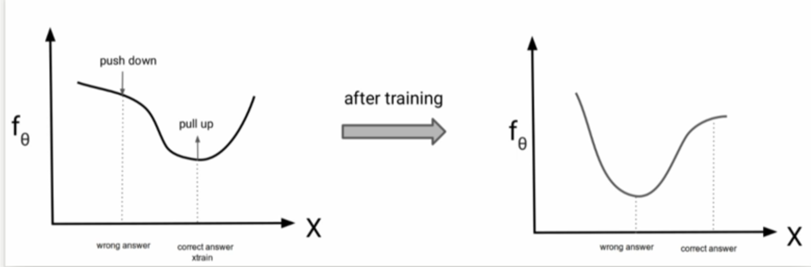

Energy-Based Models
Parameterizing Probability Distributions
Probability distributions \(p(x)\) are a key building block in generative modeling. Building a neural network that ensures \(p(x) \geq 0\) is not hard. However, the real challenge lies in ensuring that the distribution satisfies the normalization constraint: for discrete variables, the sum over all possible values of \(x\) must equal 1, while for continuous variables, the integral over the entire domain must equal 1.
Problem: \(g_\theta(x) \geq 0\) is easy. But \(\sum_x g_\theta(x) = Z(\theta) \neq 1\) in general, so \(g_\theta(x)\) is not a valid probability mass function. For continuous variables, \(\int g_\theta(x) dx = Z(\theta) \neq 1\) in general, so \(g_\theta(x)\) is not a valid probability density function.
Solution:
Then by definition,
Here, \(g_\theta(x)\) is the output of the neural network with parameters \(\theta\) at input \(x\). The volume of \(g_\theta\), denoted as \(\text{Volume}(g_\theta)\), is defined as the integral of \(g_\theta(x)\) over the entire domain: \(\text{Volume}(g_\theta) = \int g_\theta(x) dx = Z(\theta)\). It is a normalizing constant (w.r.t. \(x\)) but changes for different \(\theta\). For example, we choose \(g_\theta(x)\) so that we know the volume analytically as a function of \(\theta\).
The partition function \(Z(\theta)\) is the normalization constant that ensures a probability distribution integrates (or sums) to 1. It's called a "partition function" because it partitions the unnormalized function \(g_\theta(x)\) into a proper probability distribution.
Example: \(g_{(\mu, \sigma)}(x) = e^{-\frac{(x-\mu)^2}{2\sigma^2}}\)
Therefore, the normalized probability density function is:
This is the standard normal (Gaussian) distribution with mean \(\mu\) and variance \(\sigma^2\). Functional forms \(g_\theta(x)\) need to allow analytical integration. Despite being restrictive, they are very useful as building blocks for more complex distributions.
Note: What we've been doing with autoregressive models, flow models, and VAEs are essentially tricks for composing simple functions that are normalized to build more complex probabilistic models that are by construction guaranteed to be normalized. These approaches avoid the intractability of computing the partition function for complex distributions by designing architectures where normalization is preserved through the composition of simple, analytically tractable components.
Energy Based Models
We are going to formalize EBMs the following way:
Why \(e^{f_\theta(x)}\) and not \(f_\theta(x)^2\)?
Both \(e^{f_\theta(x)}\) and \(f_\theta(x)^2\) produce non-negative outputs, but we choose the exponential form for several important reasons:
-
Additive Energy: The exponential form allows us to work with additive energy functions. If we have \(f_\theta(x) = f_1(x) + f_2(x)\), then \(e^{f_\theta(x)} = e^{f_1(x)} \cdot e^{f_2(x)}\), which is a natural way to combine energy terms.
-
Log-Probability Interpretation: Taking the logarithm gives us \(\log p_\theta(x) = f_\theta(x) - \log Z(\theta)\). This means \(f_\theta(x)\) directly represents the unnormalized log-probability, making it easier to work with in practice.
-
Gradient Properties: The exponential function has the property that \(\frac{d}{dx}e^{f(x)} = e^{f(x)} \cdot f'(x)\). This makes gradient-based learning more stable and interpretable.
-
Numerical Stability: The exponential function grows more smoothly than quadratic functions, which can lead to better numerical stability during training.
-
Dynamic Range: The exponential function can capture much larger variations in probability compared to quadratic functions. While \(f_\theta(x)^2\) is bounded by the square of the function's range, \(e^{f_\theta(x)}\) can represent probabilities that vary by many orders of magnitude.
-
Statistical Mechanics Connection: The exponential form follows from the Boltzmann distribution in statistical mechanics, where \(p(x) \propto e^{-E(x)/kT}\), where \(-E(x)\) is the energy of state \(x\). Hence the name.
Pros: Very flexible, can use any \(f_\theta(x)\)
Cons: \(Z(\theta)\) is intractable, so no access to likelihood. Thus, evaluating and optimizing likelihood \(p_\theta(x)\) is hard (learning is hard). Also, sampling from \(p_\theta(x)\) is hard. Another con is there is no feature learning (but can add latent variables). EBMs also suffer from the curse of dimensionality - as the dimension of \(x\) increases, the volume of the space grows exponentially, making it increasingly difficult to learn meaningful energy functions and sample efficiently.
Given two points \(x_1\) and \(x_2\), evaluating \(p_\theta(x_1)\) or \(p_\theta(x_2)\) requires calculating \(Z(\theta)\). However, their ratio does not involve calculating \(Z(\theta)\).
The partition function \(Z(\theta)\) cancels out in the ratio, so we only need to evaluate the energy function at the two points and take their difference. This means we can determine which of \(x_1\) or \(x_2\) is more likely under our model without needing to compute the intractable partition function.
Training EBMs with Contrastive Divergence

Let's assume we want to maximize \(\frac{\exp(f_\theta(x_{train}))}{Z(\theta)}\). \(x_{train}\) is the 'correct answer'- we want to increase the probability of this under the model. Let's also assume we have a 'wrong answer'. The objective is to not just maximize \(\exp(f_\theta(x_{train}))\) but also minimize \(Z(\theta)\) because that's going to result in the 'wrong' answer being pushed down.
Instead of evaluating \(Z(\theta)\) exactly, we use a Monte Carlo estimate.
Contrastive Divergence Algorithm
High-Level Idea
The contrastive divergence algorithm works as follows:
Algorithm:
-
Assuming we can sample from the model, sample \(x_{sample} \sim p_\theta\)
-
Take a step on the gradient: \(\nabla_\theta(f_\theta(x_{train}) - f_\theta(x_{sample}))\)
-
Keep repeating this to make the training data more likely than typical samples from the model
Why Does This Work?
We want to maximize the log-likelihood: \(\max_\theta(f_\theta(x_{train}) - \log Z(\theta))\)
Mathematical Derivation:
The gradient of the log-likelihood is:
Let's split the terms and take the derivative:
Now we need to compute \(\nabla_\theta \log Z(\theta)\). Let's expand this:
Using the chain rule and the fact that \(\nabla \log f(x) = \frac{\nabla f(x)}{f(x)}\):
Since the integral and derivative can be exchanged:
Using the chain rule again:
Notice that \(\frac{e^{f_\theta(x)}}{Z(\theta)} = p_\theta(x)\), so:
Final Result:
Putting it all together:
The Key Insight:
The second term \(\mathbb{E}_{x \sim p_\theta}[\nabla_\theta f_\theta(x)]\) is an expectation over the model distribution. We approximate (Monte Carlo approximation) this expectation using samples from the model:
where \(x_{sample} \sim p_\theta\) is a sample from our model.
Important note on sampling:
Unlike autoregressive models or normalizing flow models, Energy-Based Models do not provide a direct way to sample from \(p_\theta(x)\). In autoregressive models, we can sample sequentially by conditioning on previous values. In flow models, we can sample from a simple base distribution and transform it through invertible functions. However, in EBMs, we need to use approximate sampling methods like:
- Langevin Dynamics: Gradient-based sampling with noise
- Gibbs Sampling: For discrete variables, updating one variable at a time
- Metropolis-Hastings: Markov chain Monte Carlo methods
- Hamiltonian Monte Carlo: More sophisticated MCMC methods
This sampling challenge is one of the main difficulties in training EBMs, as we need to run these sampling procedures every time we want to estimate the gradient.
Sampling from EBMs with Markov Monte Carlo Methods
Metropolis-Hastings Algorithm
Metropolis-Hastings (MH) is a general-purpose Markov Chain Monte Carlo (MCMC) method for sampling from complex probability distributions. It's particularly useful for Energy-Based Models where direct sampling is not possible.
The Algorithm
Step 1: Initialize Start with an initial sample \(x^{(0)}\) (could be random or from training data)
Step 2: Propose a New Sample For each iteration \(t\):
-
Generate a proposal \(x^*\) from a proposal distribution \(q(x^* | x^{(t)})\)
-
The proposal distribution should be easy to sample from (e.g., Gaussian centered at current point)
Step 3: Accept or Reject
Compute the acceptance probability:
The min(1, ...) ensures the acceptance probability is between 0 and 1. When the ratio is > 1, we always accept (probability = 1). When the ratio is ≤ 1, we accept with probability equal to the ratio.
Step 4: Update With probability \(\alpha\), accept the proposal: \(x^{(t+1)} = x^*\). With probability \(1-\alpha\), reject and keep current: \(x^{(t+1)} = x^{(t)}\)
Step 5: Repeat Continue for many iterations until convergence
This algorithm provides a robust foundation for sampling from Energy-Based Models, though it may require careful tuning and monitoring for optimal performance.
Unadjusted Langevin MCMC
Unadjusted Langevin MCMC (ULMCMC) is another popular method for sampling from Energy-Based Models. Unlike Metropolis-Hastings, it doesn't use an accept/reject step, making it computationally more efficient.
The Algorithm
Step 1: Initialize Start with an initial sample \(x^{(0)}\) (could be random or from training data)
Step 2: Langevin Dynamics Update For each iteration \(t\):
where:
-
\(\epsilon\) is the step size (learning rate)
-
\(\nabla_x f_\theta(x^{(t)})\) is the gradient of the energy function
-
\(\eta_t \sim \mathcal{N}(0, I)\) is Gaussian noise
Step 3: Repeat Continue for many iterations until convergence
Intuition
The update rule can be understood as:
-
Gradient Ascent: \(\epsilon \nabla_x f_\theta(x^{(t)})\) moves the sample toward higher energy regions
-
Noise Injection: \(\sqrt{2\epsilon} \eta_t\) adds randomness to prevent getting stuck in local optima
-
Balance: The step size \(\epsilon\) controls the trade-off between exploration and exploitation
High-Dimensional Expense
In high dimensions, gradient computation becomes expensive, and the noise term \(\sqrt{2\epsilon} \eta_t\) scales with dimension, making each step computationally costly. This computational burden is particularly problematic when training Energy-Based Models using Contrastive Divergence.
The Training Bottleneck:
Each training step in Contrastive Divergence requires sampling from the model distribution \(p_\theta(x)\). This sampling process itself is computationally expensive:
- Single Sampling Step: Each Langevin step requires computing gradients and adding noise, both of which scale with dimension
- Multiple Sampling Steps: To get a good sample, we typically need hundreds or thousands of Langevin steps
- Per Training Step: Each gradient update of the model parameters requires multiple samples
Computational Complexity:
- Gradient Computation: \(O(d)\) where \(d\) is the dimension
- Noise Generation: \(O(d)\) for generating \(\eta_t \sim \mathcal{N}(0, I)\)
- Per Langevin Step: \(O(d)\) total cost
- Sampling Process: \(O(k \cdot d)\) where \(k\) is the number of Langevin steps (typically 100-1000)
- Per Training Step: \(O(n \cdot k \cdot d)\) where \(n\) is the number of samples needed
Practical Impact:
This means that training an EBM using Contrastive Divergence with Langevin sampling can be extremely slow, especially for high-dimensional data like images. The sampling process becomes the computational bottleneck, making it difficult to scale EBMs to large datasets or high-dimensional problems.